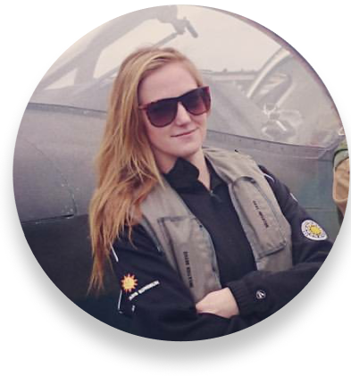

Företagets historia
Företaget startades sommaren 2011 av Elin Hagelin, Pascal
P Semb och Malin Jonsson med en vision att återinföra
fotografier till världen.
Från tidigt 1500-tal har människan på ett eller annat sätt
lyckats spara sina minnen. Allt ifrån målade tavlor,
broderier tills den första kameran tillverkades av Fransmannen
Joseph Niépce år 1826.
Sedan dess har kameran utvecklas stadigt och idag har nästan
alla människor från varierande åldrar en egen
kamera i fickan.
Ett problem vi har idag är att tack vare mobilens utveckling
sparas alla minnen i molnet.
Vilket innebär att de inte finns med oss fysikst som de gjorde förr.
Det vill vi på HandPrint AB ändra på med hjälp av våran
revolutionerande - MOBILE-HAND-PRINTER.
Grundarna av HandPrint AB
Elin Hagelin - UI / UX Designer
E-post: Elin-Hagelin@outlook.com
Telefon: 010-33 54 958
Pascal P Semb - Backend developer
E-post: Pascal2011@hotmail.com
Telefon: 010-23 24 256
Malin Jonsson - Frontend developer E-post: Malin.Jonsson@hotmail.com Telefon: 010-36 46 567
